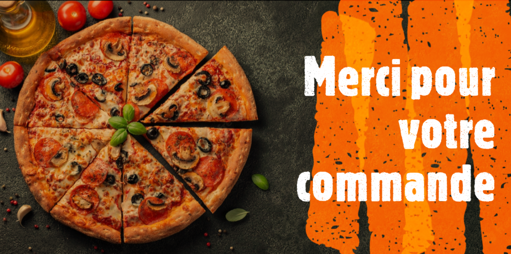

<section class="food_section layout_padding">
  <div class="container">
    <h1 class="align-middle text-center">Votre commande est validée !</h1>

    
    <div class="align-middle text-center">
      <button class="btn btn-outline-success" (click)="retour()">
        Retour à l'acceuil
      </button>
    </div>
  </div>
</section>
